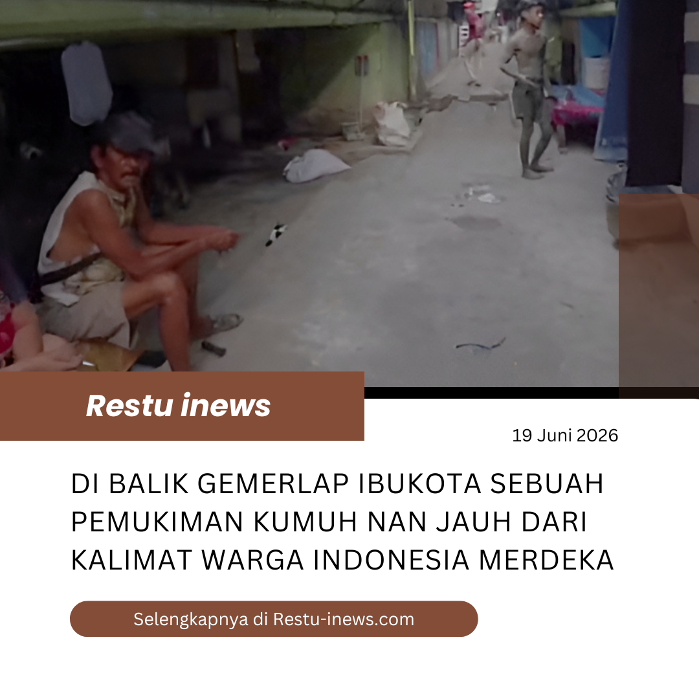

19 Juni 2026 | Tasikmalaya
Di balik gemerlapnya ibu kota Jakarta, ada pemukiman yang menampung banyak masyarakat kecil dan miskin. Ironisnya mereka tidak memiliki atap layak untuk buah hati kecil mereka. Sungguh kenyataan yang pahit dimana kata Indonesia Raya seakan tidak tergambarkan di kawasan ini.
Kurangnya perhatian pemerintah membuat angka kemiskinan dan pengangguran meningkat pesat dari 3 tahun terakhir. Ironisnya anak-anak tidak mendapatkan akses pendidikan yang layak, kelaparan, kesehatan dan keamanan pun terabaikan.
Selengkapnya